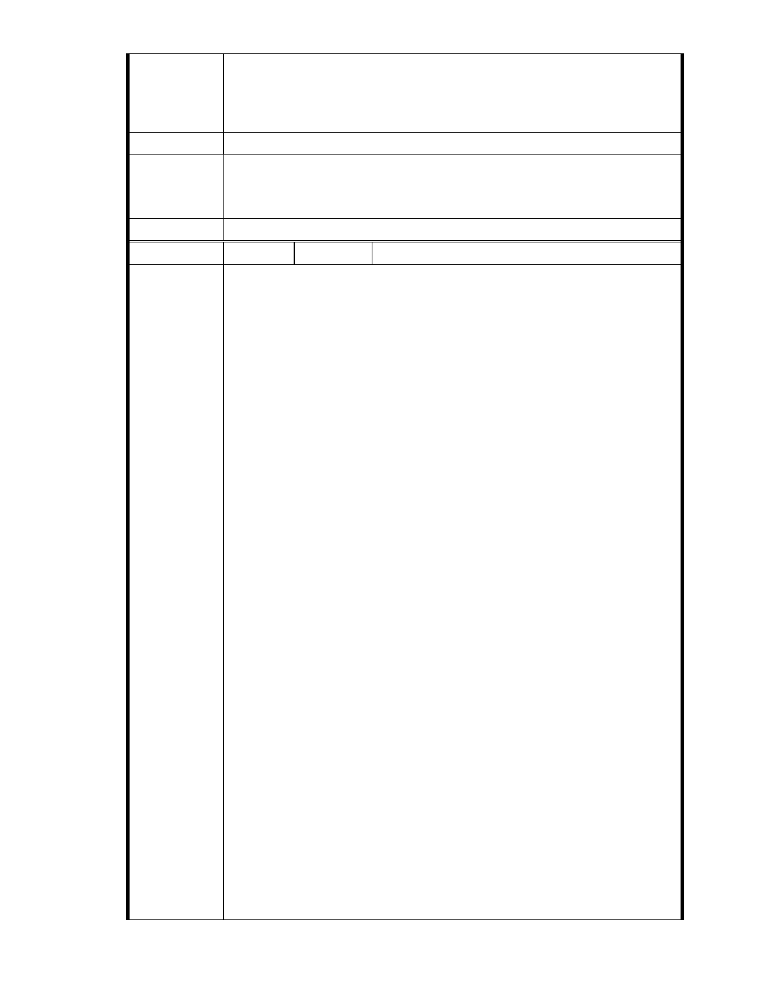

所有會勘、審議、專案小組會議及大會，並請依政府資訊公開法將會議
時間、地點，以及會議資料、紀錄等相關資訊提前公開上網，俾便閱覽。
建議辦法
一、本案已進入都市計畫法定程序，後續將依都市計畫委員會審定內容
市府說明
為準。
二、相關陳情意見將納入本案審查人民意見，依法定程序辦理。
委 員 會 決 議 同編號 1。
編
號 114
陳情人 孫武廷（MA201210160065 ）
主旨：
有關「變更臺北市內湖區成功路五段大湖公園北側部分保護區及道路用
地為社會福利特定專用區主要計畫案」，本人依據貴委員會歷次專案小
組會議多位委員意見，提出本案應實施環境影響評估陳情意見，敬請查
照。
說明
一、 依據都市計畫法第 19 條第 1 項規定辦理。
二、 基於台北市保護區劃設的目的與意義、全球氣候驟變下的極端天
候，以及保護區對於台北市內湖區大湖里與本住戶的重要價值，認為水
土保持、天然資源、生態與都市排水蓄洪等功能，應優先於社會福利設
施開發使用。
陳 情 理 由 三、 依據 95 年 12 月 04 日本案第七次專案小組審查會議紀錄：顏委員愛
靜 1、開發基地雖僅有 4.6 公頃涉及變更，但因整體面積多達 16 公頃，且
屬環境敏感區，建議仍須做詳細的「環境影響評估」。2、有關張委員提
議本案應先送環評乙節，縱使本案開發面積 4.6 公頃，是在法令所規定的
5 公頃以上的門檻下，惟慈濟若欲取信於人，建議仍應送環評審議，才能
讓問題更清楚一些。
四、 依據 95 年 10 月 11 日本案第六次專案小組審查會議紀錄：1、江委
員彥霆針對本案所可能產生環境衝擊部分，慈濟應予以正面回答。個人
亦贊成本案因接近環評之門檻，申請單位應嚴肅看待。2、蔡委員淑瑩依
環評法「開發行為對環境有不良影響之虞者，應實施環境影響評估」，
本案建議可透過此機制做進一步的分析。3、蘇委員瑛敏個人贊同本案應
進行環評的理由不僅只本案變更申請接近 5 公頃的送審門檻，尚且是慈
- 125 -